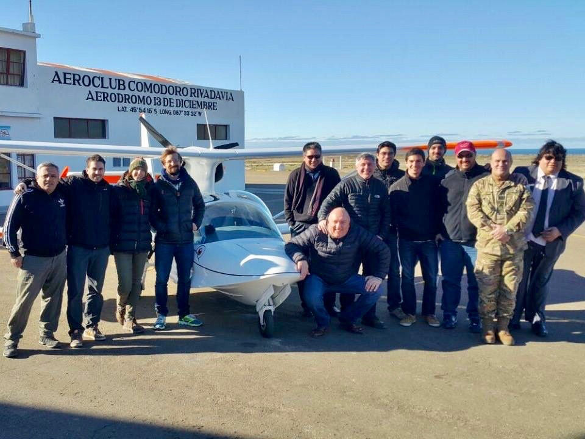
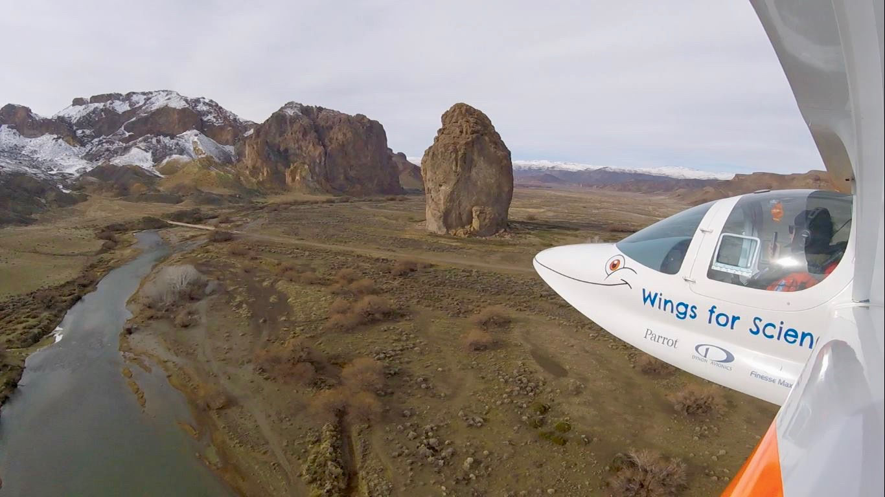
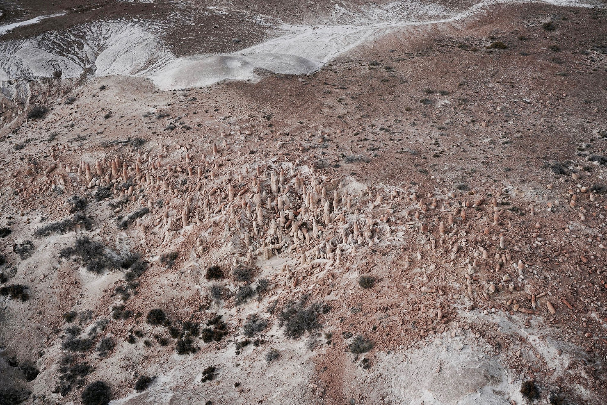
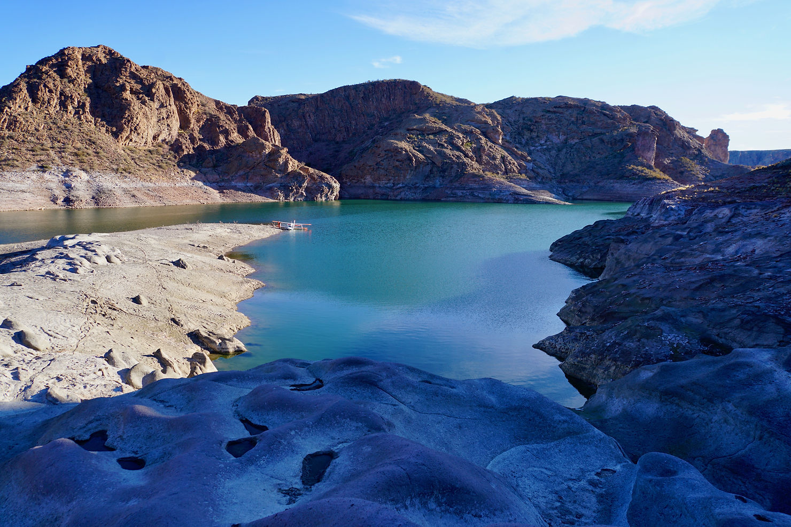
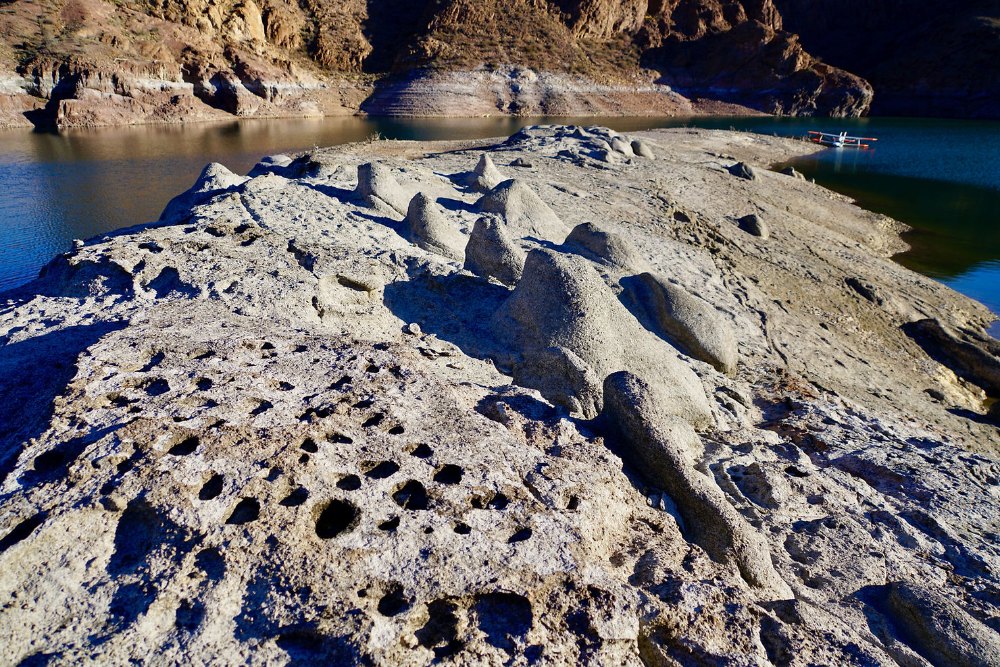
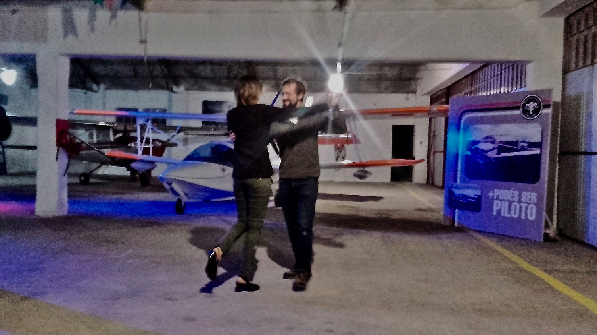
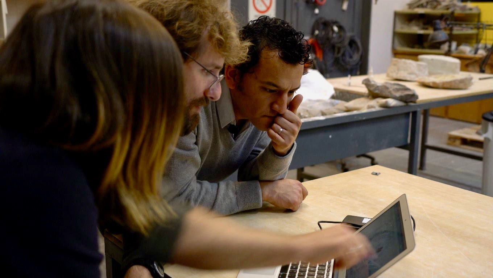
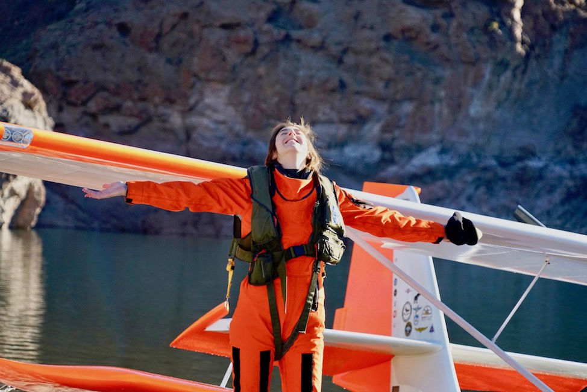

Hello les amis, nous voici à l'est de l'Argentine où nous allons participer à une mission paléontologique. Mais avant cela, Clementine rêve de découvrir enfin le tango argentin et prend donc sa première leçon !

Après cette découverte culturelle originale, nous rencontrons les paléontologues du Museo Paleontológico Egidio Feruglio (MEF) à Trelew. Marcelo Krause nous a en effet mandatés pour effectuer une mission de survol, de photographie et de modélisation de toutes les zones que nous pourrions rencontrer qui contiendraient des rizolithes... Connaissez-vous ce drôle de mot ? Ce sont des fossiles de racines d'arbres, vieux de près de 30 millions d'années.

On vous explique : actuellement la zone entre les villes de Trelew et de Comodoro Rivadavia est extrêmement sèche, pas un arbre ne pousse, on y voit à peine quelques buissons épineux. Mais il y a très longtemps, à l'époque juste après les dinosaures, il y avait ici une forêt qui puisait son eau profondément.

Bien sûr il n'en reste rien, mais ces racines d'arbres sont là pour nous le rappeler ! Comment est-ce possible ? Les arbustes sont morts, asséchés, et le sol autour des racines s'est pétrifié. Les racines ont ensuite disparu elles aussi, mais en laissant un espace vide à l'intérieur de ces blocs de pierre, sous la terre.
Le vent, par un phénomène d'érosion, a ensuite déplacé des tonnes de terre du sol, laissant alors apparaître des colonnes pétrifiées qui surplombent les lieux par milliers, et qui contiennent des petits trous : la marque des anciennes racines d'arbres. Du ciel cela ressemble à une forêt de colonnes, une sorte d'arène peuplée de colonnes de Buren (sans les rayures).

Notre mission est un succès, car nous avons effectivement pu cartographier les zones connues, et en découvrir d'autres similaires, qui témoigneraient de l'existence d'anciennes forêts !

Au fait, ça vous dit de vous envoler dans cette zone incroyable et inaccessible, et de naviguer entre les fossiles ? C'est possible : découvrez notre modèle 3D dans lequel vous pouvez avancer en réalité virtuelle.

Interview TV locale
Et ci-dessous, une interview en espagnol sur la TV locale Siete Noticias :

